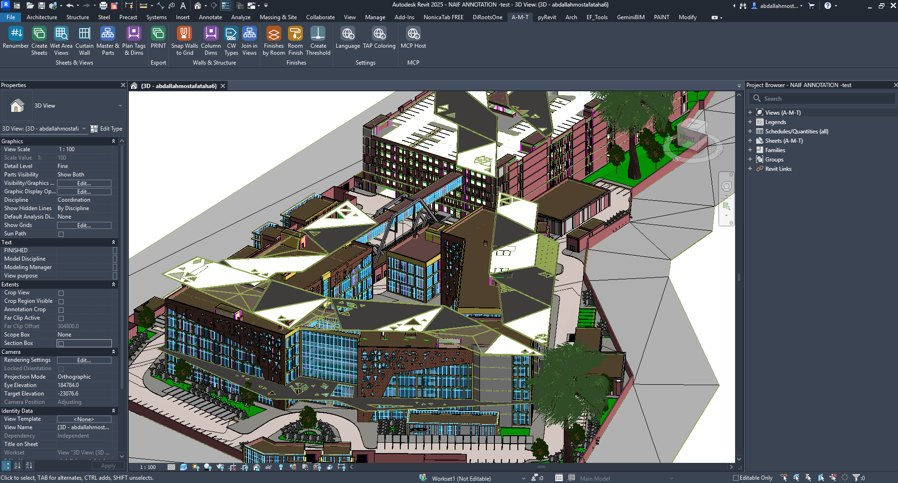
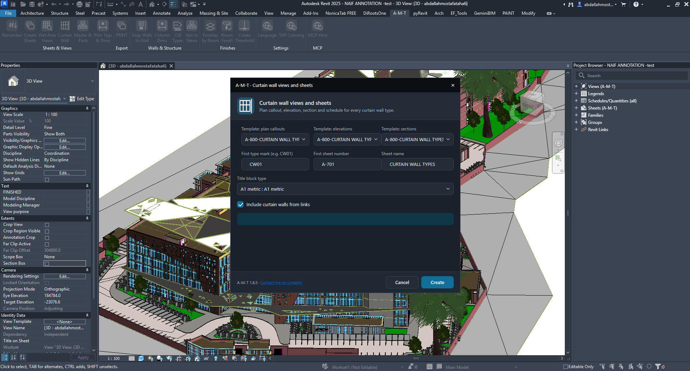
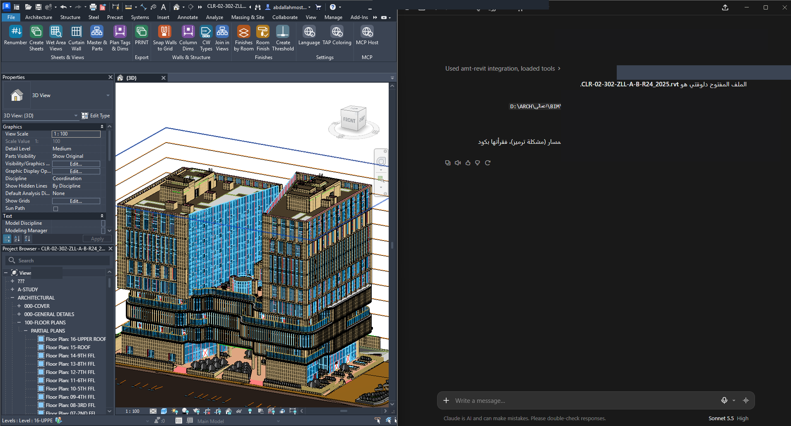
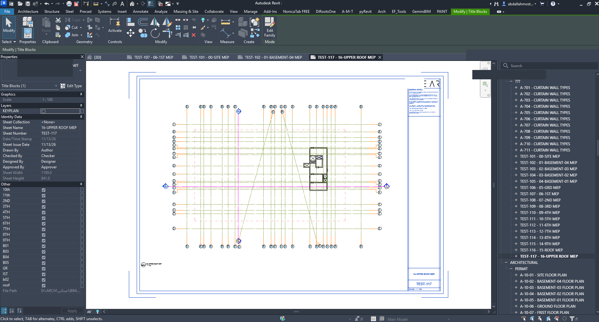

A powerful Revit add-in designed to simplify architectural modeling, automate repetitive tasks, and improve everyday BIM productivity.
Download A-M-T Explore FeaturesPowerful Tools. Smarter Workflows.
Everything you need to improve your Revit production workflow.
Modeling & Automation
Automate curtain walls, sheet creation, wall operations, room workflows and repetitive modeling tasks.
Documentation
Improve documentation with automated dimensions, tags, printing, schedules and view organization.
AI Integration
Connect supported AI clients to Revit through the A-M-T MCP integration.
Explore All 17 Tools
Powerful tools designed to simplify your everyday Revit workflow.
Explore A-M-T
See the toolkit in action inside Autodesk Revit.

A-M-T Revit Ribbon

Curtain Wall Automation

Print PDF / DWG

MCP Host

AI Integration

Curtain Wall Output

Create Sheets Setup

Create Sheets Result

Generated Sheet
Documentation & Guides
Everything you need to install and use A-M-T.
Installation Guide (PDF)
Illustrated step-by-step installation instructions.
Quick User Guide
An overview of the A-M-T toolkit and its commands.
Online Installation Guide
Installation instructions directly on the website.
Individual Command Guides
Detailed documentation for all 17 commands.
Ready to Improve Your BIM Workflow?
Discover a smarter way to work with Autodesk Revit.
Get A-M-T Contact Developer